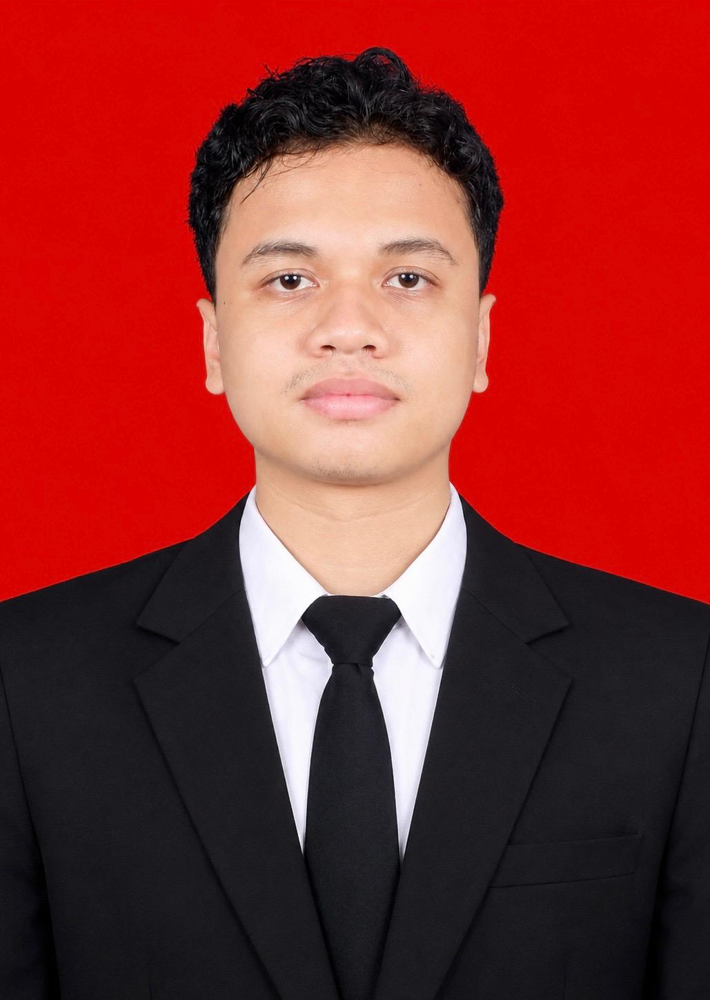

Akuisisi parameter kualitas air dan pengiriman data sensor menuju server.
PORTOFOLIO / TEKNIK ELEKTRONIKA
Moch. Zaim
Zidan KN.
Kelistrikan. Otomasi.
Integrasi sensor.
Dari pengujian kelistrikan hingga perangkat IoT. Mengenal karya dan pengalaman saya dalam Teknik Elektronika.
MEET THE ENGINEER

D4 Teknik ElektronikaPoliteknik Negeri Malang
KEDIRI, JAWA TIMUR · INDONESIA01 — PROFIL & KARYAScroll untuk mengenal saya ↓
PERANGKAT KERJATIA PortalArduino IDEFluidSIMEasyEDAMicrosoft Word
01 / TENTANG SAYA
Menghubungkan perangkat
dengan solusi nyata.
Saya lulusan D4 Teknik Elektronika, Politeknik Negeri Malang, periode 2022–2026.
Pengalaman PKL saya meliputi pengujian kelistrikan, pemrograman PLC, dan pengujian komunikasi sensor. Dalam proyek, saya mengembangkan gateway LoRa serta mengintegrasikan perangkat IoT.
01 Pengujian kelistrikan02 PLC & sistem kontrol03 Mikrokontroler & komunikasi sensor
02 / PILIHAN KARYA
Dari ide menjadi
sistem terhubung.
Eksplorasi proyek dan kontribusi saya.
Pilih karya untuk melihat detail.
Topologi jaringan sensor dan pengiriman data kesehatan ternak dalam sistem IoT terpadu.
03 / PENGALAMAN LAPANGAN
Belajar langsung.
Bekerja di lapangan.
PT PAL Indonesia
Electric Outfitting and Interior, Surabaya
Praktik Kerja Lapangan · Juli–Desember 2025
Pengujian kelistrikan
Melakukan megger test pada motor 3 fasa dan mendokumentasikan tahanan isolasi sesuai SOP.
Otomasi
Memprogram PLC serta menguji respons dan keamanan rangkaian kontrol.
Instrumentasi
Menguji akurasi sensor cuaca melalui komunikasi serial RS-422 dan RS-485.
04 / PENDIDIKAN & SERTIFIKASI
Fondasi untuk
terus berkembang.
D4 Teknik Elektronika
Politeknik Negeri Malang
Pembelajaran relevan
05 / MARI TERHUBUNG
Kesempatan baru,
percakapan baru.
Terbuka untuk kesempatan kerja yang relevan
dengan Teknik Elektronika.